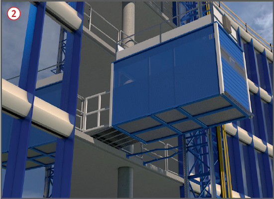

Fehlende Sicherungsmaßnahmen bei der
Montage bzw.
Demontage des Aufzuges sowie
mangelhafte Absturzsicherung
an den hochgelegenen Ladestellen können zu Absturzunfällen führen.
Außerdem kann es zu Verletzungen durch
herabfallende
Gegenstände kommen oder zu
Stolper-, Rutsch- und Sturzunfällen
bei mangelhaften Übergängen
an den Ladestellen.
Schutzmaßnahmen
Aufstellung
Aufzugsanlagen auf tragfähigem
Untergrund aufstellen.
Auf- und Abbau nur unter Beachtung
der Betriebsanleitung.
Dort sind die Montageart, die
Montagereihenfolge und die
Sicherungsmaßnahmen für die
Monteure beschrieben, z. B. wie
sich diese gegen Absturz sichern
und in welchen Abständen der
Mast an festen Gebäudeteilen zu
verankern ist .
Betrieb
An den Haltestellen sichere
Übergänge vorsehen .
Elektrisch betriebene Aufzugsanlage
nur über besonderen
Speisepunkt mit Schutzmaßnahme anschließen, z. B. Baustromverteiler mit
Fehlerstrom−Schutzeinrichtung (RCD).
Bei Gefahr durch herabfallende
Gegenstände den unteren
Zugang mit Schutzdach sichern und Gefahrbereich wirksam absperren.
Zugänge zum Antrieb der Aufzugsanlage
verschlossen halten.
Die Bedienung eines Bauaufzuges
zur Personenbeförderung
erfolgt durch eine unterwiesene
und beauftragte Person, die
auch in der Lage sein muss, im
Bedarfsfall den Notablass in der
Kabine betätigen zu können und
die außerdem die Aufzugsanlage regelmäßig auf augenscheinliche
Mängel überprüft.
Fahrkorb nicht überlasten, Angaben auf Kennzeichnung im Fahrkorb beachten.
Lasten im Fahrkorb gegen Umstürzen
oder Abrollen sichern.

Prüfungen
Aufzugsanlagen sind
überwachungsbedüftige Anlagen
nach Betriebssicherheitsverordnung.
Wiederkehrende Prüfungen
sind von zugelassenen Überwachungsstellen durchzuführen.
Prüfergebnis ins Prüfbuch
eintragen lassen. Prüfbuch an
der Einsatzstelle zur Einsicht
bereithalten.
Prüfungen sind erforderlich vor
der ersten Inbetriebnahme sowie
wiederkehrend alle 2 Jahre
durch eine zugelassene Überwachungsstelle.
Zusätzlich sind nach
Betriebssicherheitsverordnung
entsprechende Zwischenprüfungen durchzuführen.
Prüfungen nach jeder Montage
auf einer neuen Baustelle durch
eine "zur Prüfung befähigte Person" (z. B.
Sachkundigen).
 .
. .
.